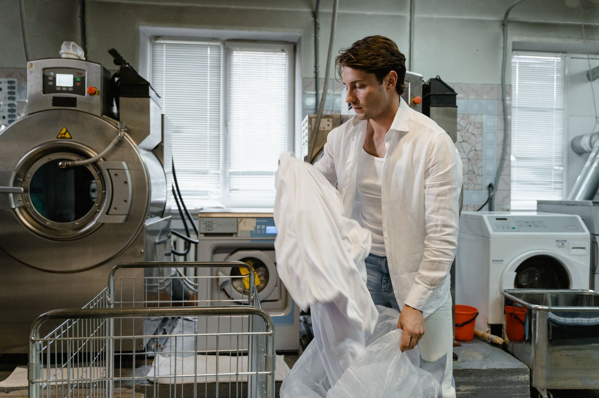
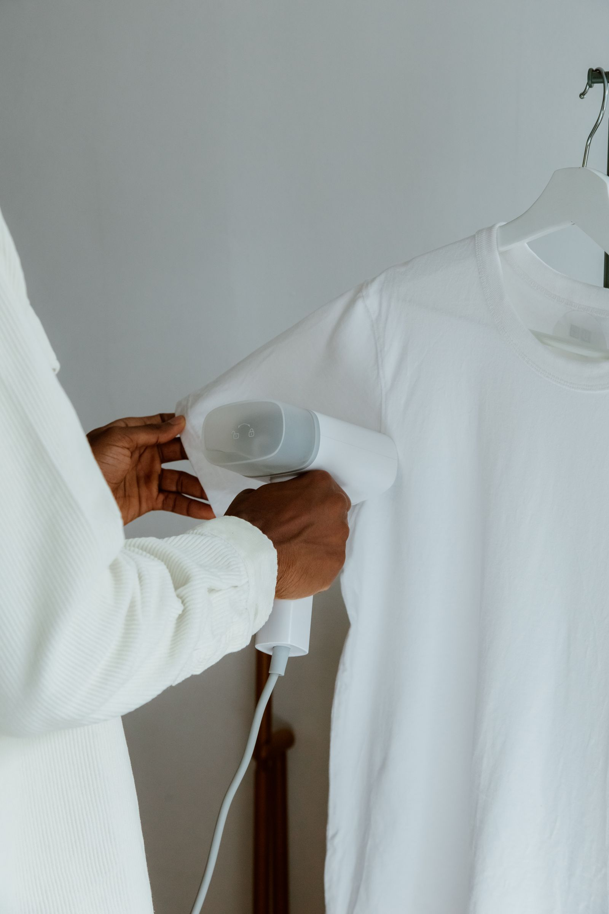

Dry cleaner · 502 W William Joel Bryan Pkwy, Bryan, TX
Pressed right.
Family run, since day one.
West 25th Laundry & Dry Clean is a family-owned shop run by Mr. Roy — the kind of place where reviewers say he "always has a good vibe" and remembers who you are. Their starch is homemade, in-house.
★ 4.8 on Google · 23 reviews
A detail worth having its own section
Our starch is homemade
Real reviews single this out: "they can do HEAVY starch and the starch is homemade!!" Ask for your preferred level when you drop off.
Light
A soft touch — crisp without the stiffness.
Heavy
Homemade, in-house — the starch reviewers specifically call out.
No Starch
Clean and pressed, no starch added.
Starch levels shown reflect what reviewers describe requesting — confirm exact options and pricing by calling (979) 775-8354.
What we do
Dry cleaning & laundry
Built from real review topics on West 25th's Google Business Profile — not a confirmed price list. Call and ask about your garments.
- ✦
Dry Cleaning
Suits, dresses, and delicate garments handled with care.
- ✦
Homemade Starch Pressing
Light, medium, or heavy — made in-house.
- ✦
Jeans & Everyday Wear
Reviewers mention jeans specifically among items cleaned.
- ✦
Wash & Fold
Everyday laundry, cleaned and folded.
Confirm your exact garment needs and turnaround by calling (979) 775-8354.
About the shop
Mr. Roy, personally
Real reviews describe Mr. Roy's customer service as "always dependable, and truly genuine" — the kind of owner customers say takes pride in his work and cares about every person who walks through the door. It's a private, family-owned business that's kept its Saturday hours even when that's been a challenge, according to long-time reviewers.
Source: West 25th Laundry & Dry Clean's public Google Business Profile — lead verified 2026-09-05, review text read for internal research 2026-09-21. Review text itself is not republished on this page as quotes.

Customer reviews
Real reviews from real customers
Google reviews will appear here once connected. We'll display exactly what customers have said — nothing invented, nothing edited.
“Google reviews will appear here once connected.”
See us on GoogleAs shown on West 25th Laundry & Dry Clean's public Google Business Profile — verified 2026-09-21.
Find us & hours
On William Joel Bryan Pkwy
Find us
502 W William Joel Bryan Pkwy
Bryan, TX 77803
No independent website is listed for West 25th, per its Google Business Profile (verified 2026-09-21).
Hours
| Saturday | Open — call for exact hours |
| Weekdays | Call or message for hours |
| Sunday | Call to confirm |
Drop it off. Pick it up pressed.
Family-owned, Saturday hours, and starch made in-house. Call ahead or just stop by.